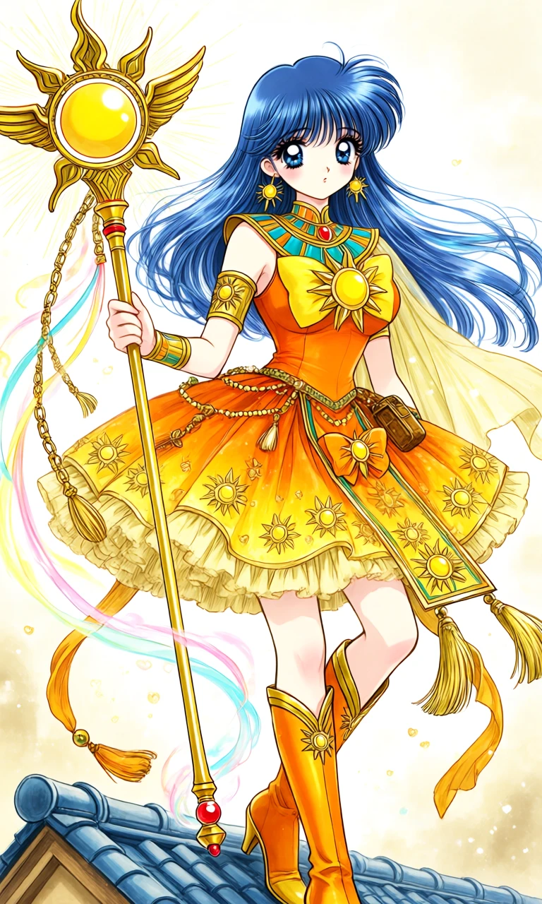
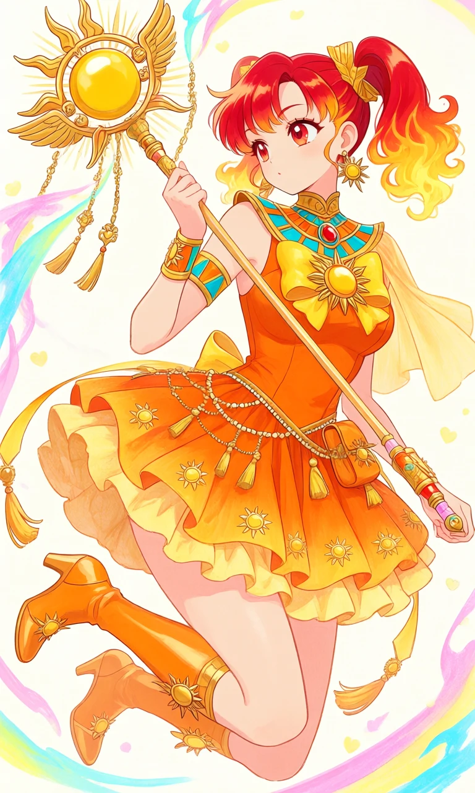

Keeper of the Sun

Outfit Prompt
Their outfit is a detailed magical girl outfit.
A fitted, sleeveless orange bodice that flares into the skirt. A large, prominent golden-yellow bow centered on the chest featuring a bright sun emblem with radiating rays. An ornate Egyptian-style collar/neckpiece in gold, turquoise, and orange with a central red gem. Matching golden arm cuffs on both upper arms and wrists with sun motifs. One shoulder has a flowing, semi-transparent golden cape-like drape.
A short, voluminous, multi-layered ruffled skirt in gradient orange-to-yellow. The skirt is covered in repeating small golden sun emblems. Gold trim and a beaded chain belt with tassels and a small pouch around the waist. Additional golden ribbons and tassels hang from the belt area.
A large orange bow that has a sun centerpiece. Sun-shaped earrings.
Tall golden-orange heeled boots that reach just below the knee. The boots feature pointed toes, slight heels, and V-shaped decorative accents with small sun details.
Weapon: they are holding a long, elegant sun scepter topped with a large golden sun orb, wings, and radiating rays. The staff has dangling golden chains and tassels, and glowing colorful energy ribbons swirl around it.
Dominant colors of the outfit: Bright orange, golden yellow, with accents of turquoise and red.
Motifs: Suns (both small decorative ones and large central emblems), hearts, Egyptian gold accents, and flowing ribbons.
The entire outfit has a Solar Princess concept — very bright, energetic, and regal while keeping the classic cute and frilly magical girl silhouette.
Outfit Examples



